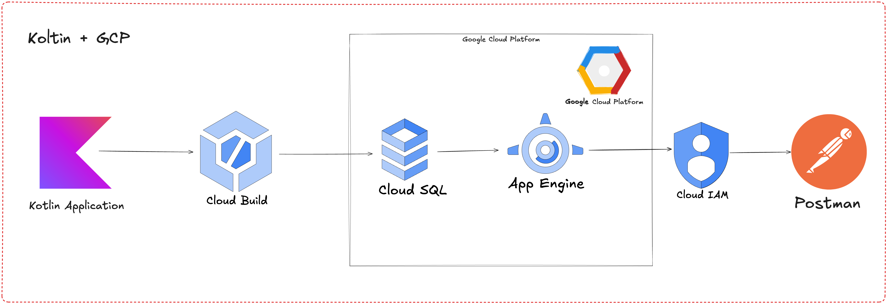

Despliegue de una API REST con Kotlin en Google Cloud con PostgreSQL
Introducción
El desarrollo de aplicaciones modernas requiere herramientas robustas y eficientes para facilitar la creación, el despliegue y el mantenimiento de APIs. Este taller te guiará en el proceso de crear y desplegar una API REST desde cero utilizando Kotlin y Spring Boot, con integración a PostgreSQL como base de datos y despliegue en Google Cloud App Engine.
Aprenderás a usar Spring Initializr para configurar un proyecto base de forma sencilla, seleccionar las dependencias clave, y desplegar la aplicación en un entorno gestionado que asegura escalabilidad y disponibilidad.
Requisitos para el taller
1. Conocimientos previos
Para aprovechar al máximo este taller, es recomendable contar con los siguientes conocimientos básicos:
- Concepto básico de APIs REST: Cómo funcionan y para qué se utilizan..
- Familiaridad con Kotlin o Java: Conocimientos básicos de sintaxis y programación orientada a objetos.
- Conceptos básicos de bases de datos relacionales: Cómo funcionan las tablas, relaciones y consultas SQL.
2. Herramientas necesarias:
Antes de iniciar el taller, asegúrate de tener instaladas y configuradas las siguientes herramientas:
Software
- Java Development Kit (JDK) 21: Necesario para compilar y ejecutar la aplicación.
- Google Cloud Platform (GCP): Una cuenta activa para trabajar con los servicios de Google Cloud.
- Spring Boot: Versión 3.2.x o superior para desarrollar la aplicación.
- PostgreSQL 16: Puede estar instalado localmente o ejecutarse a través de un contenedor Docker.
Entorno de Desarrollo
- IntelliJ IDEA (recomendado) Un IDE potente compatible con Kotlin y Gradle.
- Docker Desktop: UPara crear entornos de desarrollo consistentes y pruebas locales.
Herramientas de Google Cloud
- Google Cloud SDK: Instalado y configurado para interactuar con servicios de GCP.
- gcloud CLI Tool: Para gestionar despliegues y recursos desde la terminal.
Paso a paso basado en Spring Initializr
En este paso, configuraremos un proyecto base utilizando Spring Initializr, seleccionando las dependencias necesarias para nuestro proyecto de API REST con Kotlin y PostgreSQL. Sigue estas instrucciones para preparar tu entorno.

Figura # 1: Configuración de Spring Initializr
-
Selección del Proyecto y Lenguaje:
- Abre la página de Spring Initializr
- Configura las siguientes opciones iniciales como se muestra en la Figura 1:
- Project (1): Selecciona Gradle - Kotlin para aprovechar las ventajas del sistema de construcción Gradle y la sintaxis concisa de Kotlin.
- Language (2): Selecciona Kotlin como lenguaje principal.
- Spring Boot Version: Elige la versión más reciente estable (3.2.x o superior).
-
Configuración de Metadatos del Proyecto:
- En la misma página, completa los campos relacionados con los metadatos del proyecto. Consulta la Figura 1 para validar la configuración:
- Group:
com.geovannycode(define el grupo base del paquete del proyecto). - Artifact:
kotlin-gcp(como nombre base del artefacto). - Name:
kotlin-gcp(nombre del proyecto). - Description:
Demo project for Spring Boot(puedes personalizarlo según el contexto). - Package Name: Preconfigurado como
com.geovannycode. - Packaging (3): Selecciona Jar.
- Java Version: Selecciona 21 (última versión compatible con Kotlin y Spring Boot).
- Group:
- En la misma página, completa los campos relacionados con los metadatos del proyecto. Consulta la Figura 1 para validar la configuración:
-
Dependencias Importantes: Las dependencias son módulos o bibliotecas que agregan funcionalidades específicas al proyecto. Cada una de las dependencias seleccionadas cumple un propósito esencial para construir nuestra API REST de manera eficiente. A continuación, se explica cada una:
- Haz clic en el botón Add Dependencies y selecciona las dependencias necesarias como se muestra en la Figura 1 (4):
- Spring Web
- Propósito: Permite construir aplicaciones web y APIs RESTful utilizando el modelo MVC (Model-View-Controller) de Spring.
- Características clave:
- Facilita la creación de controladores REST para manejar solicitudes HTTP (GET, POST, PUT, DELETE).
- Incluye un servidor embebido (por defecto Tomcat), lo que elimina la necesidad de configurar un servidor externo.
- Spring Data JPA
- Propósito: Proporciona una forma sencilla y eficiente de interactuar con bases de datos relacionales utilizando JPA (Java Persistence API) e Hibernate como implementación subyacente.
- Características clave:
- Permite realizar operaciones CRUD (Crear, Leer, Actualizar, Eliminar) sin necesidad de escribir consultas SQL manuales.
- Soporte para consultas personalizadas y uso de anotaciones para mapear clases a tablas.
- Validation
- Propósito: Permite validar los datos de entrada en las solicitudes HTTP utilizando anotaciones.
- Características clave:
- Anotaciones como
@NotNull,@Size, y@Emailpara garantizar que los datos cumplen con las reglas de negocio. - Integración con los controladores REST para devolver errores descriptivos si los datos no son válidos.
- Anotaciones como
- Docker Compose Support
- Propósito: Simplifica el desarrollo local al permitir configurar y ejecutar servicios en contenedores Docker directamente desde el entorno de desarrollo.
- Características clave
- Ideal para levantar servicios como PostgreSQL en contenedores sin instalar software adicional.
- Facilita la colaboración, ya que todos los servicios se describen en un archivo
compose.yaml.
- PostgreSQL Driver
- Propósito: Permite que la aplicación Kotlin se comunique con bases de datos PostgreSQL utilizando JDBC.
- Características clave:
- Implementa el protocolo JDBC necesario para ejecutar consultas SQL desde Spring Data JPA.
- Necesario para la conexión entre Spring Boot y PostgreSQL.
- Flyway Migration
- Propósito: Gestiona las versiones y migraciones del esquema de base de datos de manera controlada y reproducible.
- Características clave:
- Permite ejecutar scripts SQL para crear o modificar tablas.
- Garantiza que las actualizaciones del esquema sean consistentes en todos los entornos.
- Los archivos de migración se almacenan en
resources/db/migration/.
- Spring Web
- Haz clic en el botón Add Dependencies y selecciona las dependencias necesarias como se muestra en la Figura 1 (4):
-
Generación del Proyecto:
- Una vez configuradas todas las opciones, haz clic en el botón GENERATE para descargar el proyecto como un archivo
.zip. - Extrae el contenido del archivo descargado y ábrelo en IntelliJ IDEA.
- Una vez configuradas todas las opciones, haz clic en el botón GENERATE para descargar el proyecto como un archivo
-
Validación Inicial del Proyecto
- Abre el proyecto descargado en IntelliJ IDEA:
- Selecciona File > Open y navega al directorio del proyecto.
- IntelliJ detectará automáticamente que es un proyecto Gradle y configurará las dependencias.
- Asegúrate de que las dependencias se instalen correctamente ejecutando:
- Abre el proyecto descargado en IntelliJ IDEA:
Esto asegura que no haya errores de configuración.
Diagrama de la Aplicación
El siguiente diagrama ilustra el flujo de la aplicación y los componentes que se integran para construir, desplegar y probar la API REST con Kotlin, Spring Boot y Google Cloud Platform (GCP):

Figura # 1: Diagrama de la Aplicación
Descripción del Diagrama
El flujo de la aplicación está compuesto por los siguientes elementos:
-
Kotlin Application:
- Descripción: Este componente corresponde al desarrollo de la API REST utilizando Kotlin y Spring Boot. Es el núcleo de la lógica de negocio y la funcionalidad de la aplicación.
- Detalles:
- Implementa los endpoints RESTful.
- Gestiona las solicitudes HTTP y realiza operaciones con la base de datos.
- Emplea herramientas como Spring Data JPA para la persistencia y Flyway para las migraciones.
- Rol en el flujo: Genera y gestiona la lógica principal de la API REST.
-
Docker (Solo para PostgreSQL en Local):
- Descripción: Durante el desarrollo local, la base de datos PostgreSQL se ejecuta dentro de un contenedor Docker utilizando un archivo de configuración docker-compose.yml.
- Detalles:
- Proporciona un entorno de base de datos consistente y aislado para pruebas locales.
- Los datos generados durante el desarrollo se gestionan en el contenedor local, pero no son transferidos automáticamente a la nube.
- Rol en el flujo: Simula la base de datos para desarrollo local antes de migrar a Cloud SQL en producción.
-
Cloud Build:
- Descripción: En el flujo de despliegue, el código fuente de la aplicación se procesa a través de Cloud Build, un servicio de Google Cloud que empaqueta el proyecto y genera un archivo JAR para el despliegue.
- Detalles:
- Realiza pasos como pruebas unitarias, validación del código y generación del artefacto (archivo ejecutable).
- Este artefacto se utiliza posteriormente en App Engine.
- Rol en el flujo: Empaqueta y prepara la aplicación para su despliegue en la nube.
-
Cloud SQL:
- Descripción: En producción, la base de datos local configurada con Docker se reemplaza por Cloud SQL, un servicio gestionado de Google Cloud que ejecuta PostgreSQL.
- Detalles:
- El esquema de la base de datos se migra utilizando Flyway.
- Proporciona alta disponibilidad, seguridad y escalabilidad para los datos de producción.
- Rol en el flujo: Actúa como la base de datos relacional en el entorno de producción.
-
App Engine:
- Descripción: La aplicación empaquetada en el archivo JAR se despliega en App Engine, una plataforma completamente gestionada por Google Cloud.
- Detalles:
- Escala automáticamente según la carga de usuarios.
- Gestiona permisos y credenciales para conectarse a Cloud SQL mediante Cloud IAM.
- Rol en el flujo: Hacer accesible la API REST desde cualquier lugar a través de un dominio público.
-
Cloud IAM:
- Descripción: Gestiona los permisos y las políticas de seguridad para la conexión entre la aplicación y los servicios de Google Cloud.
- Rol en el flujo: Proporciona autenticación y autorización seguras.
-
Postman:
- Descripción: Herramienta utilizada para probar los endpoints de la API REST. Permite enviar solicitudes HTTP para validar las respuestas.
- Detalles:
- Las pruebas se realizan primero contra el entorno local (Docker).
- Luego, se validan los endpoints desplegados en App Engine.
- Rol en el flujo: Garantiza que la API funcione correctamente en ambos entornos.
Resumen del Diagrama
| Componente | Entorno | Rol Principal |
|---|---|---|
| Kotlin Application | Local y Nube | Contiene la lógica de negocio y los controladores. |
| Docker (PostgreSQL) | Local | Proporciona la base de datos para pruebas locales. |
| Cloud Build | Nube | Empaqueta y valida la aplicación para su despliegue. |
| Cloud SQL | Nube | Base de datos gestionada para el entorno productivo. |
| App Engine | Nube | Hospeda y escala la API REST en producción. |
| Cloud IAM | Nube | Gestiona permisos y seguridad. |
| Postman | Local y Nube | Valida los endpoints de la API en ambos entornos. |
Objetivo del Taller
Al finalizar el taller, los participantes serán capaces de:
- Configurar un proyecto Kotlin con Spring Boot desde cero.
- Gestionar dependencias clave para construir una API REST funcional.
- Integrar PostgreSQL con Flyway Migration para migraciones controladas.
- Desplegar y probar la API en Google Cloud App Engine, aprovechando los servicios gestionados como Cloud SQL.
- Usar herramientas de desarrollo como Docker y Postman para un flujo de trabajo eficiente.